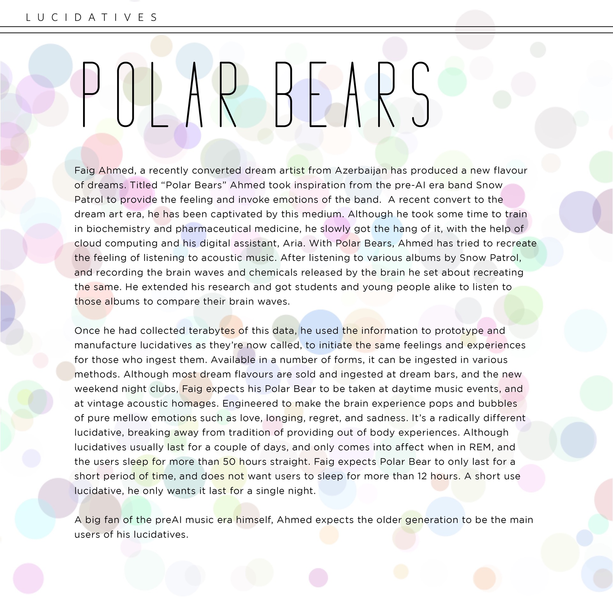

Holoplagiaristic Fatalism
Overview
A speculative design project exploring the future of art, art movements and the world it occupies. The project presents plagiarism and generative art as the basis of future art movements and explores the finer nuances of this speculation through the medium of exhibition and scenography.
Role
Co-Speculator
People
The final project of the last semester of the National Institute of Design entailed us to make a project on the future of festivals, specifically design festivals of 2034. This was a broader approach from which we could explore our own avenues. The first half of this 12-week project was spent researching the future, and imagining the world in 2034, and what form would festivals take in the future. The word itself, festivals has changed its meaning over the last century or so, but it still meant bringing people together.
We collated our research into a zine, called Disquiet: 2034 ↗. This zine was imagined to be a zine from the year 2034, put together by students in the future, documenting the current events of the time. This zine served as a jump off point for us, and we each took a different direction into visualising one aspect of the future. Meghana and I were particularly interested in the future of art, as we felt art is what would dictate and define the visuals, the language, and the nature of entertainment.

spreads from the zine
Our subsequent research into the future of art has been compiled into a document called Holoplagiaristic Fatalism ↗, which serves as a manifesto for what we feel would be the prevalent art movement in 2034. It is difficult to comprehend and structurally predict the future of any discipline, let alone something as fluid and difficult to explain as art. There could be many possible futures, and this is us attempting to define one of them. The art movement of the future, called Holoplagiaristic Fatalism talks about a world saturated and overrun by content, where every creation is a derivative of another, and algorithm based bot-artists have run amok, destroying and democratising art. In this world, plagiarism is not only the norm, but is expected. The word plagiarism itself has taken on a new meaning, with a positive and creative connotation. The plagiarists manifesto in the document outlines the new rules of art, and defines the difference between positive and destructive plagiarism.
To communicate this research and the finer details of the Holoplagiaristic Fatalism art movement, we created a scenographic installation. We created a backstory in the context of 2034, for the creation of this art movement. The protagonist of the story was the creator of the art movement, Henry Dietrich Wolf. The space was the set of Henry’s work desk. Through the desk and the items on it – notebooks, sketch books, letter, a computer (music, emails, documents etc.), a viewer can discover the story of the man and the movement. The sample artwork we created, was hung in the space to complete the set (the creator of which was meant to be Henry). The set was meant to be an interactive and immersive experience that communicated the core principles and story of the art movement.

The desk of Henry Dietrich, the fictional founder of Holoplagiaristic Fatalism.

The viewer learns about the art movement by exploring the items on the desk


Notes explaining the workings behind recursion in art